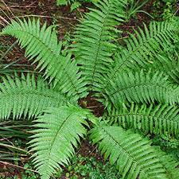
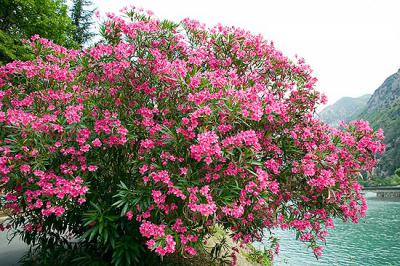
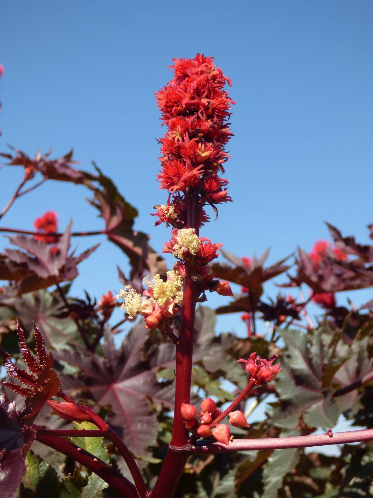
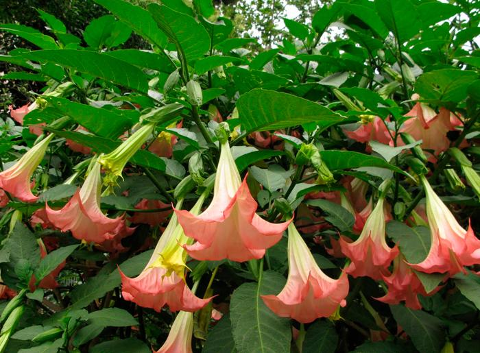

Helecho macho (Dryopteris filix-mas)
El helecho macho es un helecho de gran tamaño con frondas (hojas) verdes y coriáceas, que pueden llegar a medir hasta 1 metro de largo. Crece en zonas húmedas y sombrías, como bosques y barrancos. Todas las partes de la planta son tóxicas, especialmente las raíces.
Toxicidad
Contiene sustancias tóxicas como filicina, que afecta al hígado y a los riñones. Es especialmente peligroso para niños y mujeres embarazadas.
Síntomas de envenenamiento
- Náuseas
- Vómitos
- Diarrea
- Dolor abdominal
- Debilidad muscular
- Convulsiones
- Daño hepático y renal
Precauciones
Evita el contacto con la planta y no la consumas. En caso de contacto accidental, busca atención médica inmediata.
Adelfa (Nerium oleander)
La adelfa es un arbusto de hoja perenne con flores de color rosa, blanco o rojo. Se cultiva como planta ornamental en jardines y parques. Todas las partes de la planta son altamente tóxicas, especialmente las hojas y las flores.
Toxicidad
Contiene glucósidos cardíacos que afectan al corazón.
Síntomas de envenenamiento
- Náuseas
- Vómitos
- Diarrea
- Dolor abdominal
- Ritmo cardíaco irregular
- Convulsiones
- Coma
Precauciones
Evita el contacto con la planta y no la consumas. Mantén a los niños y a las mascotas lejos de la planta. En caso de contacto accidental, busca atención médica inmediata.
Ricino (Ricinus communis)
El ricino es una planta herbácea con hojas grandes y palmadas, de color verde oscuro. Produce semillas de color marrón oscuro con manchas grises. Se cultiva como planta ornamental y para la producción de aceite de ricino. Las semillas son altamente tóxicas, contienen ricina, una toxina que afecta a las células. La ingestión de tan solo una o dos semillas puede ser fatal.
Toxicidad
Las semillas son altamente tóxicas, contienen ricina, una toxina que afecta a las células. La ingestión de tan solo una o dos semillas puede ser fatal.
Síntomas de envenenamiento
- Náuseas
- Vómitos
- Diarrea
- Dolor abdominal
- Deshidratación
- Convulsiones
- Coma
Precauciones
Evita el contacto con las semillas y no las consumas. Mantén a los niños y a las mascotas lejos de la planta. En caso de contacto accidental, busca atención médica inmediata.
Trompeta de ángel (Brugmansia spp.)
La trompeta de ángel es un arbusto o árbol pequeño con flores grandes y colgantes, de color blanco, amarillo, naranja o rojo. Se cultiva como planta ornamental. Todas las partes de la planta son tóxicas, especialmente las hojas y las flores.
Toxicidad
Contiene alcaloides tropánicos, como la escopolamina, que afectan al sistema nervioso central.
Síntomas de envenenamiento
- Alucinaciones
- Delirio
- Confusión
- Taquicardia
- Midriasis (dilatación de las pupilas)
- Sequedad de boca
- Dificultad para respirar
- Convulsiones
- Coma
Precauciones
Evita el contacto con la planta y no la consumas. Mantén a los niños y a las mascotas lejos de la planta. En caso de contacto accidental, busca atención médica inmediata.
Manzanillo (Hippomane mancinella)

El manzanillo es un árbol de tamaño mediano con hojas ovaladas y brillantes, de color verde oscuro. Produce frutos pequeños y redondos, de color verde o amarillo. Se encuentra en zonas costeras de América tropical. Todas las partes de la planta son altamente tóxicas, especialmente la savia, la fruta y la madera.
Toxicidad
Contiene sustancias irritantes que causan dermatitis, conjuntivitis, dolor abdominal, vómitos, diarrea y convulsiones.
Síntomas de envenenamiento
- Irritación de la piel y los ojos
- Dolor abdominal
- Vómitos
- Diarrea
- Convulsiones
Precauciones
Evita el contacto con la planta y no la consumas. No te acerques al árbol, especialmente en días de viento, ya que la savia puede ser transportada por el viento. En caso de contacto accidental, busca atención médica inmediata.